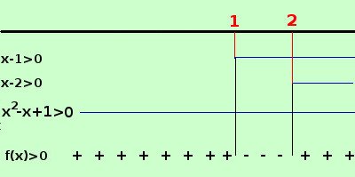

|
y = √(x4 - 4x3 + 4x2 + x - 2) devo porre il termine sotto radice maggiore od uguale a zero x4 - 4x3 + 4x2 + x - 2 ≥ 0 Devo trovare i valori dove la funzione e' positiva o nulla Per trovarli devo scomporrre il polinomio associato in fattori e studiare il segno del prodotto dei vari fattori trovati scompongo il polinomio Sono 5 termini: posso scomporre con il raggruppamento ed ottengo: x4 - 4x3 + 4x2 + x - 2 = raccolgo x2 fra i primi 3 x2(x2-4x+4) + ( x - 2) = Nella prima parentesi ho il quadrato di un binomio x2(x-2)2 + ( x - 2) = raccolgo (x-2) fra il primo ed il secondo = (x-2)·[x2(x-2) + 1] = eseguo i calcoli nella seconda parentesi = (x-2)·[x3-2x2+1] ≠ 0 Nella seconda parentesi ho tre termini: posso scomporre con Ruffini (x3-2x2+1)= i possibili divisori sono +1 e -1 (x-1); P(1)= 1 -2 +1 = 0 scompongo per x-1 devo mettere ordine nel polinomio, al posto del termine x2 che non esiste metto 0
eseguo la divisione di Ruffini ed ottengo (x3-2x2+1)= (x - 1)(x2 - x + 1) quindi ho: x4 - 4x3 + 4x2 + x - 2 = (x-1)(x-2)(x2 - x + 1) il trinomio x2 - x + 1 non e' ulteriormente scomponibile x4 - 4x3 + 4x2 + x - 2 = (x-1)(x-2)(x2 - x + 1) ≥ 0 Ora pongo ogni fattore maggiore di zero e indico con una linea continua gli intervalli in cui il fattore e' positivo il trinomio x2 - x + 1 e' sempre positivo : basta provare a risolvere l'equazione associata e troverai che il discriminante e' sempre negativo  per x < 1 abbiamo due fattori negativi ed uno positivo, quindi il loro prodotto f(x) e' positivo per 1 <x < 2abbiamo due fattori positivi ed uno negativo, quindi il loro prodotto f(x) e' negativo per x > 2 i tre fattori sono positivi e quindi il loro prodotto f(x) e' positivo per x=1, x=2 il prodotto f(x) vale zero quindi, siccome cerchiamo valori positivi o nulli, anche questi valori sono accettabili ottengo che la funzione e' positiva o nulla negli intervalli x ≤ 1 ∪ x ≥ 2 quindi scrivo il campo di esistenza C.E. = { x ∈ R / x ≤ 1 ∪ x ≥ 2 } |